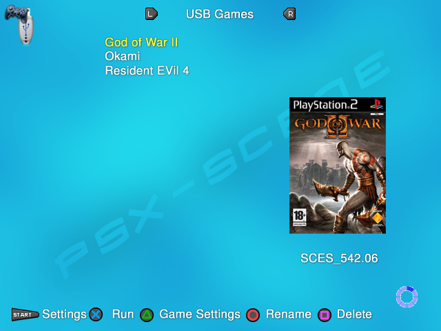

USB Games¶
Note : do not use Kingston USB devices for this (and with PS2 stuff in general) – corruption and data loss expected.
Formating your USB device :¶
Installing PS2 games :¶
Before you can install your PS2 games on your USB device, you need to make a image of them – using your favorite dump software (you can use ImgBurn for that). You also need to create a CD and a DVD folder at the root of your USB device.
OPL supports both USBExtreme (ul.xxxxxxx files) or .iso format. The installing method depends on the size of your PS2 game image.
Your PS2 game image size is under 700MB : you can drop your PS2 game image as .iso in your OPL CD folder (mass:/CD). Please note that you could also convert it to USBExtreme format – OPL would accept it. Please also note that you NO LONGER need to rename it using the old syntax <game_ID>.Name of your game.iso (example : SLES_544.39.Okami.iso) that OPL 0.8 introduced – though OPL would still accept it.
Your PS2 game image size is over 700MB, but under 4GB : you can also drop your PS2 game image as .iso in your OPL DVD folder (mass:/DVD). Please note that you could also convert it to USBExtreme format – OPL would accept it. Please also note that you NO LONGER need to rename it using the old syntax <game_ID>.Name of your game.iso (example : SLES_544.39.Okami.iso) that OPL 0.8 introduced – though OPL would still accept it.
Your PS2 game image size is over 4GB : due to FAT32 limitations, you MUST convert your iso to USBExtreme format – it will be sliced into several parts (ul.xxxxxxx1, ul.xxxxxxx2, etc) that comply with FAT32 file system limitations. You can also try to shrink you .iso (to remove dummies files if present) to get an .iso sized less than 4GB so you could use it without convertion.
Note : the game name is 32 caracters max.
The most up-to-date USBExtreme format compliant installer tool seems to be USBUtil 2.0. You can find a complete guide about it here.
You can also try to use USBUtil 2.2 REV.1.0 – but keep in mind it’s a beta (spanish language BTW :/).
OPL USB mode :¶
You need to enable your USB Device before you can use it. In OPL menu, go to Settings and set USB device start mode to MANUAL or AUTO. You should now be able to access the USB Games page. If you have enabled the device and if your PS2 games aren’t displayed in the USB games page, there are a few possible things to check :
your USB device has not been properly formatted to FAT32 ;
if you used USBExtreme format, they might haven’t been properly installed ;
if you used USBExtreme format, the ul.cfg file is missing or corrupted (fix it using your USBExtreme format compliant installer tool);
if you used .iso format, you can try to rename your game using OPL 0.8 syntax (<game_ID>.Name of your game.iso) – few games reported really needs this ;
your USB device is either not compatible or damaged/defective ;
(…)
Defragmentation :¶
USB Games must have the game files in an unfragmented state to run properly. Copying, deleting, moving files causes fragmentation to the file structure of the device and Installer programs will install game files into any available space. This can cause several issues, your games may not work properly or even can not run at all.
You can use Auslogics Disk Defrag to defragment your device. Using Windows embedded defragmenter or PowerDefragmenter is not recommended.
Note : OPL can warn you if your games are too fragmented to be properly runned. Set Check USB fragmentation to ON [Settings screen] (more than highly recommanded). Setting it to OFF is NOT a workaround to avoid having to defragment your USB device.